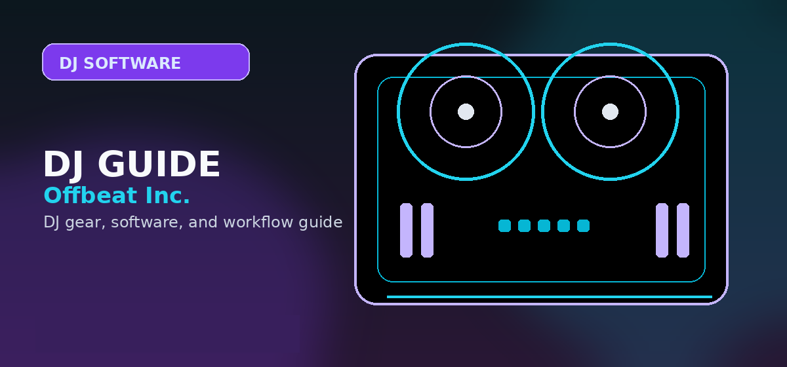

djay Pro Review 2026: Is Algoriddim Still the King of Mobile & Desktop DJing?
Comprehensive guide to djay Pro review 2026 iPhone iPad Mac DJ software Algoriddim features with practical recommendations and current buying notes — updated 2026.

Disclosure: This page uses affiliate links. We may earn a commission at no extra cost to you. Full disclosure →
Entering 2026, the barrier between "bedroom DJ" and "professional performer" has virtually disappeared, thanks largely to the evolution of Algoriddim’s djay Pro. No longer just a novelty app for the iPad, djay Pro has matured into a powerhouse ecosystem that spans iPhone, iPad, and Mac with seamless synchronization. In an era where AI-driven performance is the standard, Algoriddim has leaned heavily into machine learning to redefine how we mix. Whether you are a mobile DJ playing a corporate event from an iPad Pro or a club resident using a Mac with high-end controllers, djay Pro offers a level of flexibility that competitors like Serato and Rekordbox struggle to match. This review explores whether its feature set and pricing still justify its place as the most versatile DJ software on the market today.
Neural Mix 3.0: The Gold Standard of AI Stem Separation
The standout feature of djay Pro in 2026 remains its Neural Mix technology. While other platforms offer stem separation, Algoriddim's implementation is the most fluid, allowing DJs to isolate vocals, drums, and melodies in real-time with negligible latency. This enables "on-the-fly" mashups that were previously only possible in a DAW like Ableton Live. By stripping the drums from a pop track and layering them over a techno beat, DJs can create unique transitions that keep the energy high. The AI has become significantly more surgical, eliminating the "underwater" artifacting common in earlier versions. For the modern performer, this isn't just a gimmick; it's a fundamental tool for creative improvisation and crowd reading.
Ecosystem Synergy: iPhone, iPad, and Mac Integration
The true power of djay Pro lies in its cross-platform fluidity. Using iCloud synchronization, your crates, cues, and loops are identical across all devices. A common 2026 professional workflow involves using a Mac as the primary engine for stability and library management, while utilizing an iPad Pro as a secondary touch-interface for tactile scratching or looping. The iPhone version has also evolved into a capable "emergency" deck or a remote controller for the desktop app. This ecosystem ensures that you are never without your library. Whether you are prepping a set on the train via iPhone or performing a main stage set on Mac, the transition is frictionless, making it the ideal choice for the nomadic DJ.
Streaming Integration and Library Management
Algoriddim has mastered the art of the "cloud library." In 2026, the integration with Apple Music and Tidal is flawless, providing instant access to millions of tracks without requiring massive local storage. The software's "Automix" feature has also seen a massive upgrade, using AI to analyze harmonic compatibility and energy levels to create professional-grade transitions automatically—perfect for background sets. However, the software still encourages local file management for high-stakes gigs to avoid internet latency. The tagging and smart-playlist system is intuitive, allowing DJs to organize music by "energy level" or "vibe" rather than just genre, which speeds up the process of finding the right track under pressure.
Hardware Compatibility and M-Series Performance
djay Pro is highly optimized for Apple Silicon (M1 through M4 chips), resulting in incredibly low CPU overhead even when running multiple AI stems and high-resolution visuals. Hardware support is expansive; it works plug-and-play with industry standards like the Pioneer DDJ-FLX4 (approx. $299) and high-end mixers. The haptic feedback integration on newer iPad Pro models provides a tactile response that mimics physical platters, bridging the gap between digital and analog. While some "purists" still prefer the rigid structure of Rekordbox for CDJ setups, djay Pro's ability to turn almost any MIDI controller into a professional workstation makes it the most accessible high-end software available.
Software Comparison: 2026 DJ Landscape
| Feature | djay Pro (Algoriddim) | Rekordbox (Pioneer) | Serato DJ Pro |
|---|---|---|---|
| Primary Strength | AI Stems & Mobility | Club Standard/CDJs | Performance Scratching |
| Platform | iOS, macOS, Windows | macOS, Windows | macOS, Windows |
| AI Stem Quality | Exceptional (Real-time) | High (Stable) | High (Powerful) |
| Cloud Integration | Native Apple/Tidal | Limited/Proprietary | Moderate |
| Price (Approx.) | $49.99/year | Free / $199 (Pro) | $299 (Lifetime/Sub) |
| Best For | Hybrid/Mobile DJs | Club/Resident DJs | Turntablists/Battle DJs |
Pros & Cons
✅ Pros
- Best AI stem separation (Neural Mix 3.0) in any DJ app
- Cross-platform: Mac, iPad, iPhone, Android
- Native Spotify, Apple Music, SoundCloud, Tidal integration
- Excellent Apple Silicon performance on M-series Macs
- Works with 100+ MIDI controllers out of the box
❌ Cons
- Not the club standard — venue CDJs won't run djay
- Streaming requires active subscription to each service
- Advanced features gated behind djay PRO plan ($9.99/mo)
- Less precise jog wheel response vs hardware players
Key Specs
Quick Verdict
Best DJ software for mobile and iPad performance in 2026 — djay Pro AI is the most accessible and innovative DJ app available. Neural Mix is genuinely impressive. Not a Rekordbox or Serato replacement for club DJing, but perfect for everything else. Search djay Pro compatible controllers on Amazon →
Shop on Amazon
Find djay Pro compatible controllers on Amazon — from mini to pro.
Also on Plugin Boutique
Buy djay Pro subscriptions and bundles — direct purchase available.
Pricing Model: Subscription vs. Perpetual Value
Unlike legacy software like Virtual DJ, which offers a perpetual license model, Algoriddim has moved to a "djay Pro" subscription model. At $49.99/year, it is positioned as a service-based platform. This cost covers all updates, new features (like visionOS integration), and the massive Neural Mix cloud processing.
Is the Subscription Worth It?
If you perform frequently, the cost breaks down to roughly $4/month—less than the price of a single track on some platforms. The benefit here is the cross-platform license: one subscription unlocks the full feature set on your Mac, iPad, and iPhone simultaneously.
Controller Compatibility: The Hardware Ecosystem
djay Pro is unique because it supports "plug-and-play" operation with a vast array of controllers. However, the depth of integration varies by manufacturer. Below is a breakdown of how hardware interacts with the software's advanced features:
| Brand | Integration Level | Best Feature Support |
|---|---|---|
| Reloop | Native/Deep | Neural Mix pads & Screen feedback |
| Pioneer DJ | High | Jog wheel latency & FX sync |
| Denon DJ | Moderate | Basic transport & Mixer control |
| Numark | High | Ideal for mobile/entry-level setups |
Note: Always ensure your firmware is updated to the latest 2026 version to support specific Neural Mix mapping on legacy controllers.
Deep Dive: Neural Mix 3.0 Performance
Neural Mix 3.0 isn't just a gimmick; it’s an evolution in real-time signal processing. While competitors rely on pre-analyzed files, djay Pro performs real-time stem separation using the M-series Neural Engine on Mac and the Bionic chips on iOS. This allows for:
- On-the-fly Acapella/Instrumental creation without pre-processing.
- Individual EQ control for Drums, Harmonic, and Vocals, allowing you to blend a bassline from one track into the vocal of another seamlessly.
- Crossfader FX: Automatically applying filters or echoes only to the vocal stem while keeping the drums untouched.
For mobile DJs, this removes the need for hours of "prep work" in the studio, making it the most powerful tool for creative, improvised sets.
Where djay Pro fits in a serious setup
djay Pro can be the main platform for a modern mobile or home DJ, especially when streaming-library access and cross-device flexibility matter. It can also be a secondary tool for testing playlists, practicing on an iPad, or building quick party sets while another platform handles club prep.
The main limitation is ecosystem translation. If your long-term goal is CDJ/XDJ preparation, rekordbox still has the clearer path. If your long-term goal is scratch/controller performance, Serato may map better to the hardware you buy. If your goal is fast, flexible mixing across devices, djay Pro is one of the strongest options.
Where djay Pro is actually strongest
djay Pro is strongest for Apple-heavy DJs, mobile practice, streaming-assisted discovery, and creative mixing with Neural Mix. It is weaker as a universal club-prep platform because rekordbox and Serato still have stronger hardware and booth continuity in many professional settings.
Choose djay Pro when the iPad/Mac workflow is part of the appeal. Choose rekordbox or Serato when your controller ecosystem, venue expectations, or long-term library habits point there instead.
Official product and support pages
djay is strongest when Apple Music/mobile workflow matters.
For club preparation, compare against rekordbox before committing your whole library.
Hardware support should be checked on Algoriddim’s own list before buying a controller for djay.
Use these official pages to confirm current specifications, software compatibility, and support details before buying.
Frequently Asked Questions
Is djay Pro AI worth buying?
Yes, especially for iOS/Mac users. djay Pro AI includes AI stem separation (isolate vocals/drums/melody), Serato library sync, and full controller support. At $49.99/year it's excellent value.
Does djay Pro work with Pioneer controllers?
Yes. djay Pro supports most Pioneer controllers via USB. The Pioneer DDJ-200, DDJ-FLX4, and several other models are officially supported with full mapping.
djay Pro vs Serato DJ — which should I choose?
Choose djay Pro if you're on Mac/iPad or want AI features. Choose Serato DJ Pro for club-standard software, better scratch performance, and the widest hardware compatibility.
Is djay Pro AI available on Windows?
Yes, as of 2024. djay Pro AI is available on Windows 10/11, iOS, iPadOS, macOS, and Android. Windows support was a major update that expanded its user base significantly.
Does djay Pro have a free version?
djay Pro AI offers a free trial. After that, it's $4.99/month or $49.99/year. There's no permanent free version, but the price is competitive against Serato ($149/year) and Rekordbox (~$7.99/month).